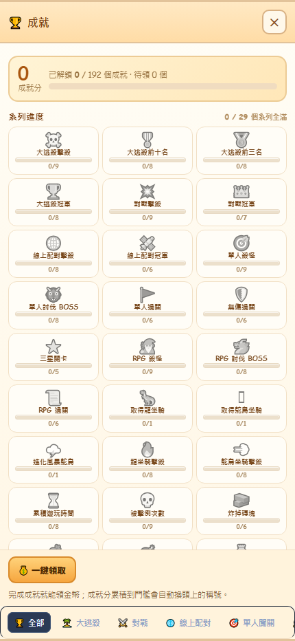
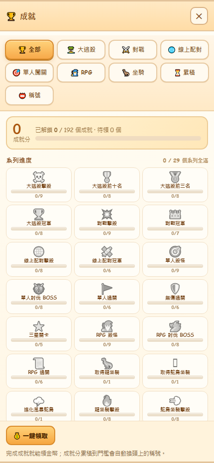

成就面板 · 分類頁籤（手機 430×932）
v5.22 之前：分類列被排到面板最底部、貼著螢幕邊，只看得到 4 個，還要左右拖 → v5.23：全部攤開在標題下方
BEFORE · v5.22

頁籤在「一鍵領取」下面，被切掉一半；9 個分類只露出 4.5 個，橫向拖曳區只有 ~30px 高
→
AFTER · v5.23

9 個分類 3 列全部可見，每格 92×40px，不用橫向滑動就能點到任何一頁